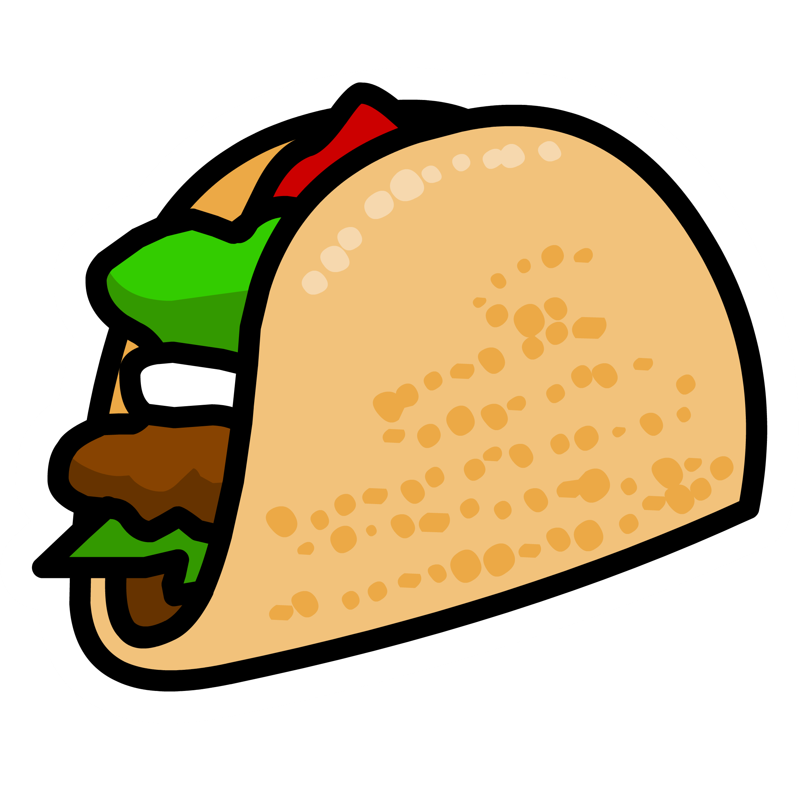

Waluigi is servin' up some spice!

One problem, though. Waluigi seems to have misplaced all of his tacos!
Even worse, today his shop has a special customer, the worst health inspector of all, Super Mario himself.
Waluigi has already had some trouble running his business (rumour has it he hasn't paid taxes in years like Yoshi), and he's had to sell nearly all of his furniture and equipment just to stay in business! This order is one he can't screw up! Can you help Waluigi?